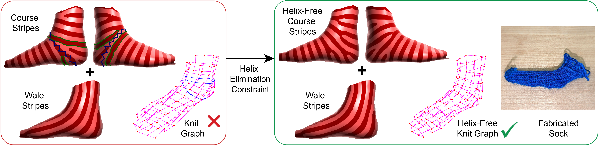
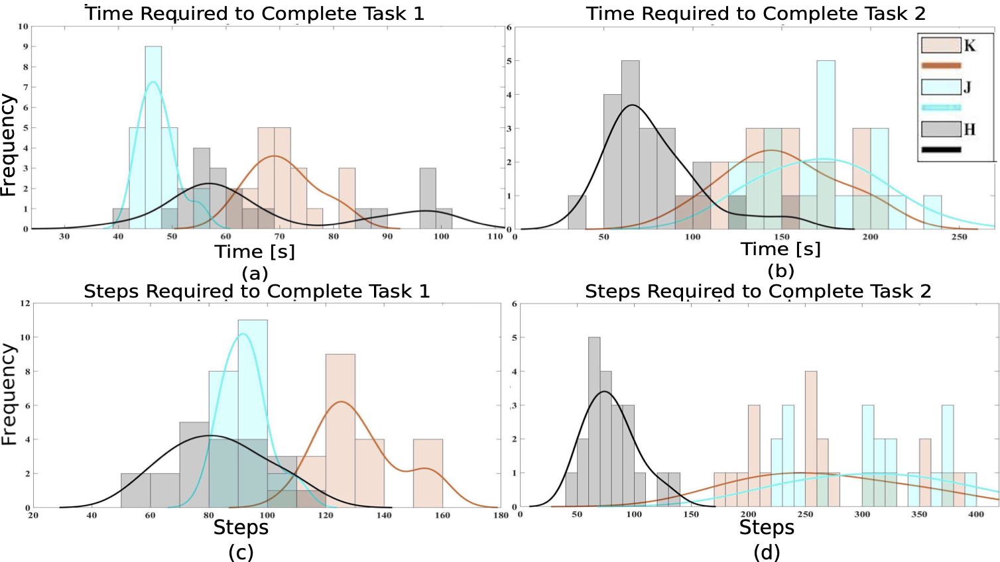
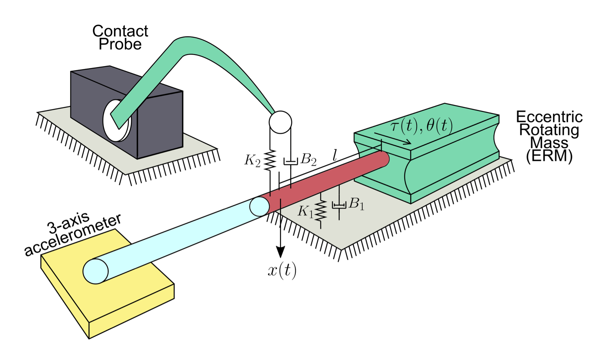
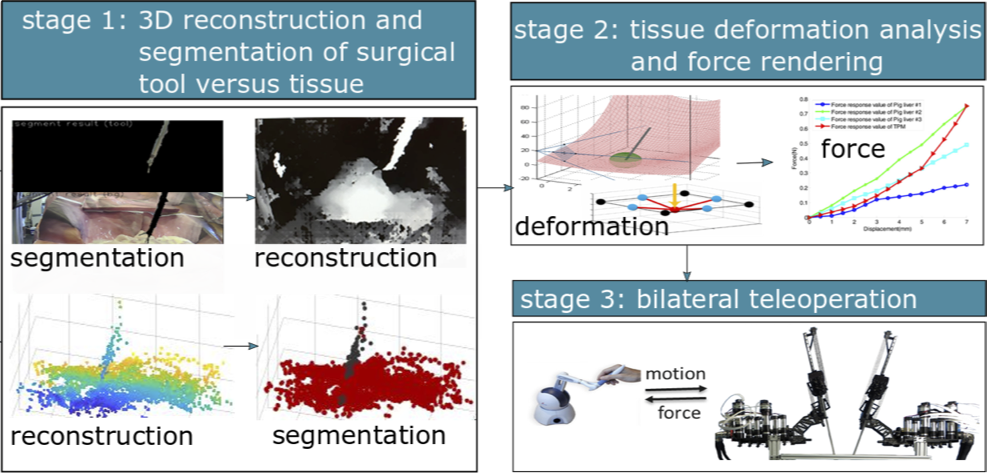
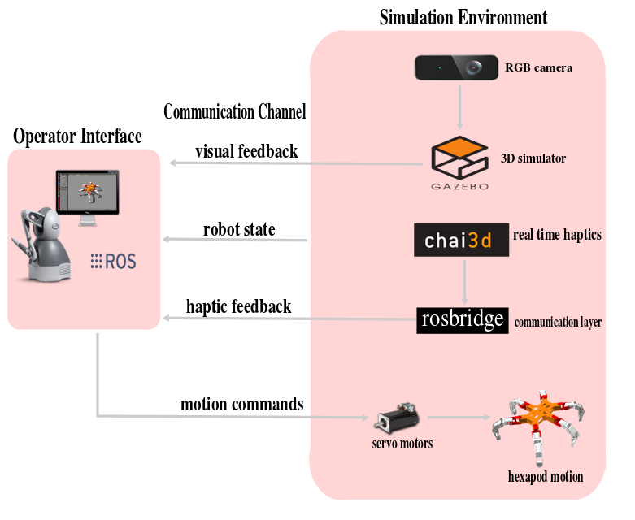
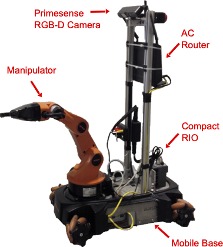

|
I am a computer science PhD student at Boston University advised by Prof. Edward Chien. My research broadly spans the areas of geometry processing, computer graphics and digital fabrication. Previously, I received my bachelor's degrees in Computer Science and Physics from Trinity College. My undergraduate research, advised by Prof. Kevin Huang, was in the area of telerobotics. Email / CV / Resume / Google Scholar / Github |

|
In the summer of 2024, I was a Research Intern at LightSpeed Studios, Tencent America working on remeshing problems for yarn-level rendering and fabrication.
|
In the past, my research largely involved projects on robotic teleoperation, evaluating haptic interfaces and contact sensing. More recently, I've been working on applying geometry processing techniques to the realm of digital fabrication. We study problems in the flavor of "How does one fabricate a doughnut or bunny?", "How does one accurately and efficiently reflect curvature in fabricated results?", "How can we use vector field design in addressing these questions?" and many more. I'm always eager to branch out and apply my skills to new research areas as well! Our work on Singular Foliations will be presented at SIGGRAPH, 2024! See you in Denver! |

|
Rahul Mitra, Erick Jimenez Berumen, Megan Hofmann, Edward Chien SIGGRAPH, 2024 project page We build upon the stripes-based knit planning framework of [Mitra et al. 2023], and view the resultant stripe pattern through the lens of singular foliations. This perspective views the stripes, and thus the candidate course rows or wale columns, as integral curves of a vector field specified by the spinning form of [Knöppel et al. 2015]. We show how to tightly control the topological structure of this vector field with linear level set constraints, preventing helicing of any integral curve. Practically speaking, this obviates the stripe placement constraints of [Mitra et al. 2023] and allows for shifting and variation of the stripe frequency without introducing additional helices. En route, we make the first explicit algebraic characterization of spinning form level set structure within singular triangles, and replace the standard interpolant with an “effective” one that improves the robustness of knit graph generation. We also extend the model of [Mitra et al. 2023] to surfaces with genus, via a Morse-based cylindrical decomposition, and implement automatic singularity pairing on the resulting components. |
|  |
Rahul Mitra, Liane Makatura, Emily Whiting, Edward Chien SIGGRAPH, 2023 project page The problem of placing evenly-spaced stripes on a triangular mesh mirrors that of having evenly-spaced course rows and wale columns in a knit graph for a given geometry. This work presents strategies for producing helix-free stripe patterns and traces them to produce helix-free knit graphs suitable for machine knitting. We optimize directly for the discrete differential (1-form) of the stripe texture function, i.e., the spinning form, and demonstrate the knitting-specific advantages of this framework. In particular, we note how simple linear constraints allow us to place stitch irregularities, align course rows and wale columns to boundary/feature curves, and eliminate helical stripes. Two mixed-integer optimization strategies using these constraints are presented and applied to several mesh models. The results are smooth, globally-informed, helix-free stripe patterns that we trace to produce machine-knittable graphs. We further provide an explicit characterization of helical stripes and a theoretical analysis of their elimination constraints. |
|  |
Kevin Huang, Divas Subedi, Rahul Mitra, Isabella Yung, Kirkland Boyd, Edwin Aldrich, Digesh Chitrakar MDPI Applied Sciences, 2021 paper This work introduces the idea of extending teleoperation to enable online human remote control of legged robots, or telelocomotion, to traverse challenging terrain. A haptic telelocomotion interface was developed. Two within-user studies validate the proof-of-concept interface and our results are promising to the use of haptic feedback for telelocomotion in complex traversal tasks. This work builds on our 2020 IRC poster paper. |
|  |
Rahul Mitra, Kirkland Boyd, Divas Subedi, Digesh Chitrakar, Edwin Aldrich, Ananya Swamy, Kevin Huang 3rd International Conference on Mechatronics, Robotics and Automation (ICMRA), 2020 paper In this work, a contact sensor that is minimally intrusive and can be subsumed into extant devices is prototyped and tested. Oscillatory acceleration data is collected and subsequently used to train and classify different contact locations using frequency-based features. Three separate classes are distinguished according to contact location. Results are promising and show excellent classification of both contact and contact location. |
|  |
Kevin Huang; Digesh Chitrakar; Rahul Mitra; Divas Subedi; Yun-Hsuan Su 42nd Annual International Conference of the IEEE Engineering in Medicine & Biology Society (EMBC), 2020 paper This work attempts to empirically evaluate the degree to which haptic feedback may deviate from ground truth yet result in acceptable teleoperated performance in a simulated RMIS-based palpation task. A preliminary user-study is conducted to verify the utility of the simulation platform, and the results of this work have implications in haptic feedback for RMIS and inform guidelines for vision-based tool-tissue force estimation. |
|  |
Digesh Chitrakar, Rahul Mitra, Kevin Huang 4th IEEE International Conference on Robotic Computing (IRC), 2020 paper This paper presents a method for leveraging human decision making and adaptability to control legged robot walking with a haptic interface. The magnitude and direction of force feedback as well as average step size were tracked during basic locomotion. |
|  |
Kevin Huang, Yun-Hsuan Su, Mahmoud Khalil, Daniel Melesse, Rahul Mitra IEEE 4th International Conference on Advanced Robotics and Mechatronics (ICARM), 2019 paper / Oral Presentation / Slides In teleoperated robots, the kinematics and workspace of the remote device is oftentimes dissimilar to the input device, leading to potential confusion and frustration of the human operator. One solution is to constrain the input device motion to a scaled version of remote device joint ranges. This paper presents a method for doing so with 3 degree of freedom (DOF) manipulators and input devices with kinematic dissimilarities. The approach utilizes a simple tree structure, whereby a local Cartesian workspace limit is sampled and indexed by joint. |
|
I enjoy teaching and engaging with students at all levels. I've TA'd multiple times (at both the undergraduate and graduate levels) and been a mentor
for the Summer Geometry Initiative (SGI) at MIT, a program that introduces undergraduate students to the field of geometry processing.
I've also volunteered at My Computer Science undegraduate thesis project, where we built a real-time object detection aid (white cane) to be used by the visually impaired, was awarded best thesis based on technical maturity and relevance. Here's some coverage it received. For my Physics senior thesis, I studied Shor's Algorithm for Polynomial Time Facotrization. |
|
Template from Jon Barron's webpage. |